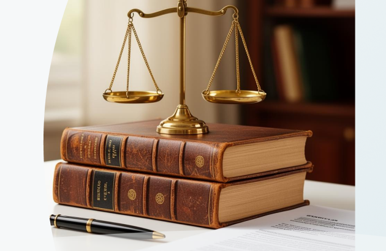

Sobre a Associação
A AAPC (Associação dos Advogados da Procuradoria Jurídica da Companhia de Saneamento de Minas Gerais – Copasa MG) é uma entidade sediada em Belo Horizonte, fundada em 24 de julho de 2019.
A associação tem como principal finalidade representar os interesses dos advogados da Procuradoria Jurídica da Copasa MG, atuando de forma organizada e institucional em defesa de seus membros.
Além disso, a AAPC participa como representante em processos judiciais envolvendo a companhia e é responsável pelo recebimento de honorários advocatícios, exercendo papel ativo na gestão e suporte às atividades jurídicas de seus associados.